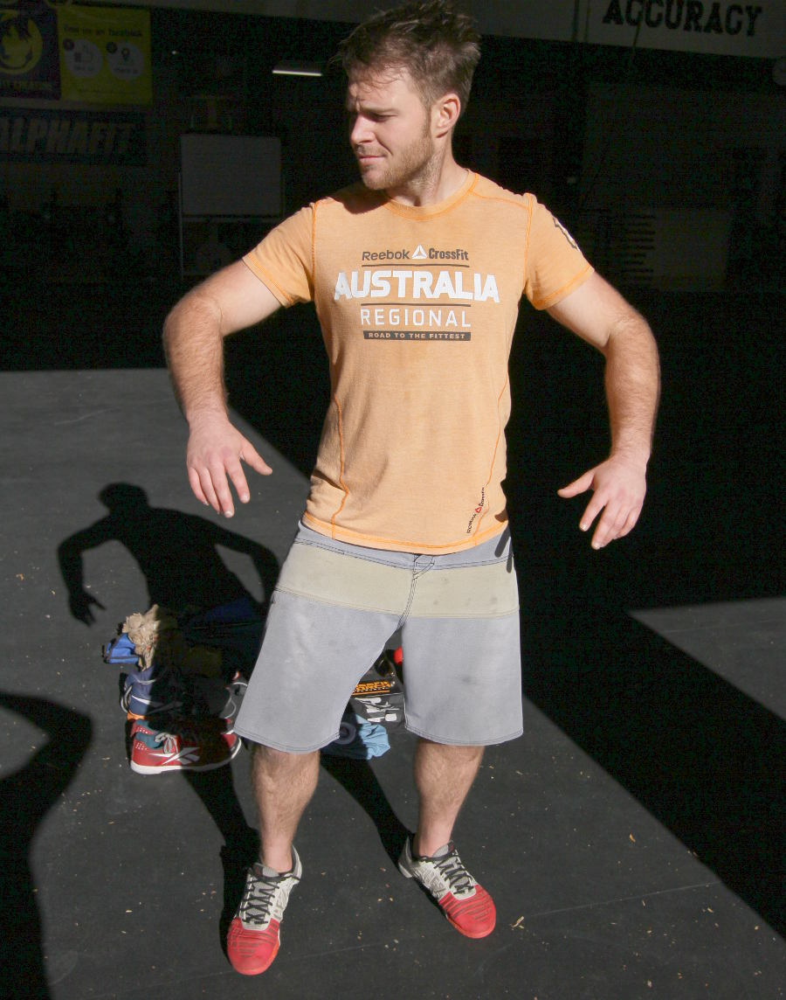

- Reebok Nano 3's
- Lachlan gave them to me
- Reebok Oly lifter
- Reebok gave them to me
- Wahoo phone holder
- For keeping track of time, heart rate and listening to beats while I run. I never run.
- Icepack
- I never use this, it requires me to buy ice or bring ice in the anticipation of needing it.
- Keys
- For gaining access to my various locations of work and rest.
- Black socks
- I always keep plenty of spare socks about
- highlighter
- Left over from study
- flyer
- For advertising my gym - CF Scorch.... in Peakhurst, call for a free trial
- Reebok t-shirt
- Spare shirt for spontaneous WODDING. Given to me by Reebok
- Lacrosse ball
- For mobilising my knees, hips and shoulders
- shorts
- Spare shorts with a hole in them, thrown away after this photo. Given to me by Reebok.
- Oakley Breadbox sunnies
- Oakley Breadbox, best sunnies every. Given to me by Oakley.
- Wallet
- Rip off Levis wallet, very small I dislike large wallets. Given to me by my brother
- phone
- Iphone 5s, broke the screen after 3 days in my possession due to the lack of a phone case
- Kneesleeves
- Protecting my knees while squatting
- Wraps
- Never use these anymore, because I havn't lifted heavy over head for sooo long!!
- Turbo cooler
- I made this to submerge my arms in ice water. Used by first responders to protect from over heating in fires. Increased recovery by a considerable amount. I have never used it and threw it away after this photo.
- What are you wearing right now??
- Reebok CrossFit Regionals 2013 top, from competing at regionals in 2013. Quicksilver stretch boardshorts, the longest lasting shorts I've ever worn 3 years and going strong. Reebok Nano 3's cause' I do WODS.
- How long have you been doing crossfit?
- since 2009
- What gym do you go to?
- CF Creature & CF Scorch
- What's next on your kit shopping list?
- Reebok Powerlifter shoe, lifting straps,
- What do you do as a job?
- CrossFit Coach, operator & student.
- Competition history
- Regionals teams 2011,2012,2013
- What isn't in your bag that should be?
- I thought that there was some tape in there and some super glue. I also usually have a Nexus 7 tablet with me and some headphones. If I'm doing a long, slow row I'll listen to podcasts with it. I'm taking this photo with the tablet.
- What bit of kit would you use, even if you were sponsored by their competitor?
- nothing jumps out; I like to remain flexible.
